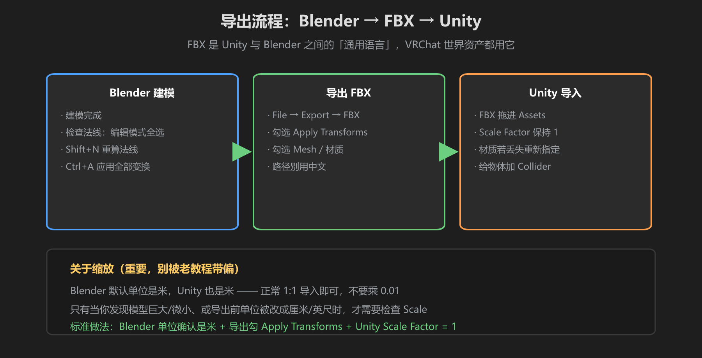
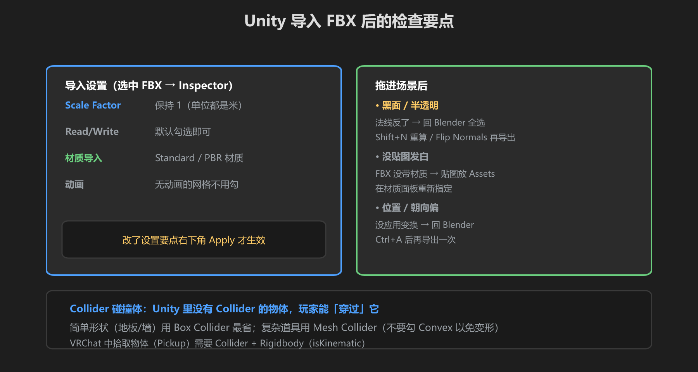

第 5 篇：导出到 Unity — FBX 与导入检查
模型做完了，最后一步是把 Blender 的作品送进 Unity，让它出现在 VRChat 世界里。本篇讲透 FBX 导出设置、著名的「缩放 0.01」误区、法线检查，以及 Collider 是什么。
1. 导出流程总览

图：Blender 建模 → 导出 FBX → Unity 导入，三步走
2. FBX 导出设置（Blender 侧）
- 选中要导出的物体 →
File → Export → FBX (.fbx) - 勾选 Apply Transforms（应用变换，把位置/旋转/缩放固化到网格上，防止进 Unity 后乱跑）
- 确保 Mesh 已勾选；有材质的勾选 Embed Textures（嵌入贴图）或之后单独带贴图
- 动画相关全不勾（本教程不做动画），勾选会增大文件
- 导出前检查：修改器全部
Apply过、法线正确（见第 4 步）、路径不要用中文
3. 关于缩放：0.01 是大误区
别乘 0.01！网上很多老教程说「Blender 导出要缩小 0.01 倍」，这是早年单位混乱时代的产物。正确事实：Blender 默认单位是米，Unity 的单位也是米（Unity 1 单位 = 1 米）。两者 1:1 导入即可，不需要任何缩放。
什么时候才需要检查缩放？只有这些情况：
- 模型导入后巨大或微小 → 检查 Blender 场景单位（场景属性 → 单位 → 确认是米），以及导出时是否勾了 Apply Transforms
- 自己把单位改过（改成厘米/英尺）→ 改回米再导出
- Unity 里检查 Scale Factor（导入设置）是否被改过，正常保持 1
标准做法就一句：Blender 单位是米 + 导出勾 Apply Transforms + Unity Scale Factor = 1。
4. 导入 Unity 与检查要点

图：导入后检查 Scale、法线、材质、Collider 四件事
- 把 .fbx 文件直接拖进 Unity 的 Assets 文件夹
- 选中它，在 Inspector 确认 Scale Factor = 1，改过设置记得点右下角
Apply - 拖进场景（Hierarchy），检查：尺寸是否正常、材质颜色是否对
- 模型是黑的 / 半透明？法线方向反了 —— 回 Blender：编辑模式全选 →
Shift+N重算法线（朝向统一朝外）→ 重新导出 - 也可以在 Blender 里手动
Flip Normals（翻转法线）单面修正，法线显示：编辑模式 → 右上角 Overlays → 勾 Face Orientation，蓝=正面朝外，红=反面
法线朝外判断：面朝哪个方向，光线就照亮哪边。法线朝里 = 黑面，这是导入后 80%「模型发黑」的原因，不是没贴图。第 6 篇对照表第一条就是它。
5. Collider：为什么物体「穿」不过去
- Unity 里没有 Collider（碰撞体）的物体，玩家可以直接穿过它，也无法被拾取
- 不会自动生成：导入的模型默认没有 Collider，需要你手动加（虽然 VRChat 的 Collider 层设置会自动配置，但碰撞体本身要手动添加）
- 简单形状（地板、墙、大箱子）：用 Box Collider（盒碰撞体）最省性能
- 复杂形状（椅子、花瓶）：用 Mesh Collider（网格碰撞体），注意性能开销
- VRChat 里要做可拾取道具（Pickup）：物体需要 Collider + Rigidbody（勾 Is Kinematic）
性能建议：Mesh Collider 是按三角面逐个碰撞的，很吃物理性能。场景大件用几个 Box Collider 拼出大致形状，效果一样还快 —— 这也是 VRChat 世界普遍的做法。
学前检查清单
- 会按正确设置导出 FBX（Apply Transforms、单位米）
- 明白「0.01 缩放」是误区，能说出正确做法
- 导入 Unity 后知道检查 Scale、法线、材质
- 黑面时知道用 Shift+N 重算法线 / Flip Normals
- 知道 Collider 要手动加，Box Collider 比 Mesh Collider 省